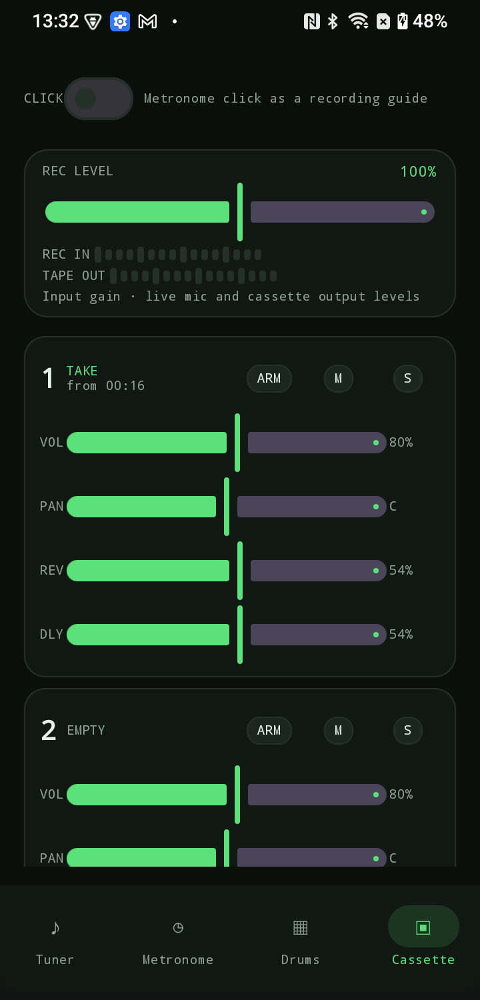
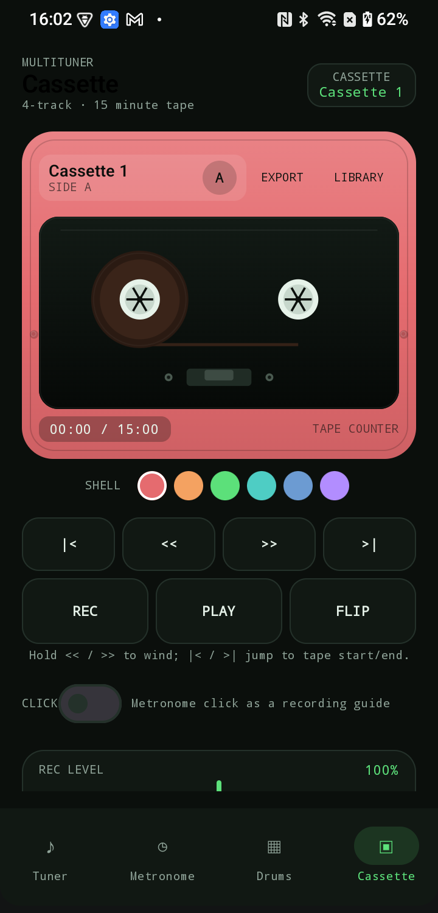
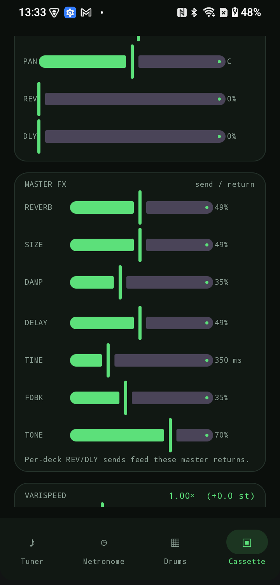
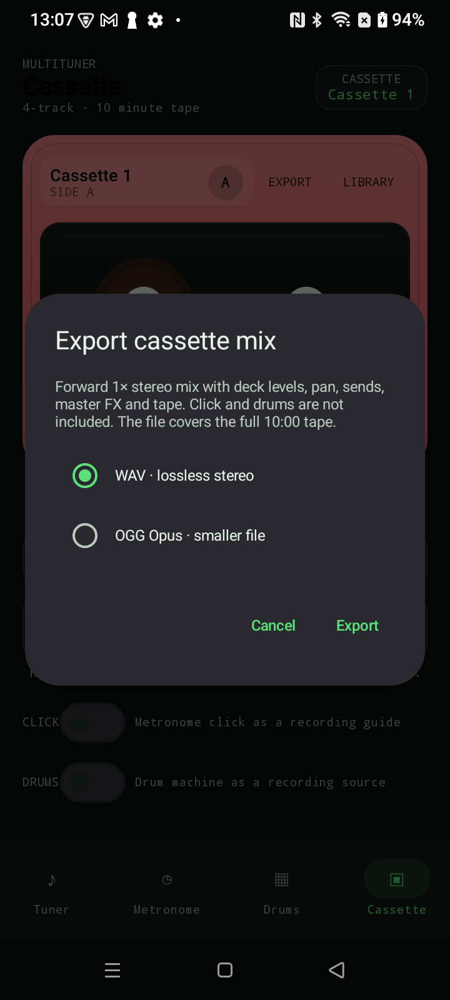

Deck sends and levels
Volume, constant-power pan, mute/solo, REV/DLY sends, record gain and live input/output meters.
Android 10+ · Offline · v0.7.1
A precise tuner, metronome, drum machine and four-track cassette recorder for string players. Native pitch detection, tape character, reverb and delay sends, and a stereo mix export you can share.
Tuner · Metronome · Drums · Cassette · Reverb · Delay · WAV/OGG export

32 presets for guitar, bouzouki, saz, tambouras, oud, laouto and lute. String-aware cents feedback with needle, strobe and input meter.
30–300 BPM, tap tempo, beats per bar, subdivisions, accent and volume. Sample-accurate on-device audio.
Eight synthesized pieces, a 16-step sequencer, accent steps, swing and Rock/Funk/House/Break patterns.
Full-width four-track tape, 15 minutes, 48 kHz/16-bit mono takes. Arm, overdub, pan, mute/solo, hold-to-wind transport and flip/reverse.
Per-deck reverb and delay sends with master returns, tape emulation, varispeed and stereo WAV/OGG export.
No internet permission, accounts or tracking. Tuner audio is processed on-device; recordings stay in app storage until you share an export.
Cassette recorder
Four mono tracks on a 15-minute tape, with per-deck sends into a reverb and delay bus. Export a forward 1× stereo mix as lossless WAV or compact OGG Opus through the Android share sheet. Version 0.7.1 adds a detailed shell, variable reel packs and hold-to-wind controls.

Volume, constant-power pan, mute/solo, REV/DLY sends, record gain and live input/output meters.

Reverb return, size and damping; delay return, time, feedback and tone. Both sit before the tape stage.

Forward 1× mix with deck settings, sends, FX and tape. WAV is lossless; OGG Opus is smaller for sharing.
Export excludes the metronome and drum guide tracks. MP3 is not offered because Android does not provide a dependable built-in MP3 encoder.
Screenshots
One app for tuning, practice and four-track ideas. Designed for phones and tablets.